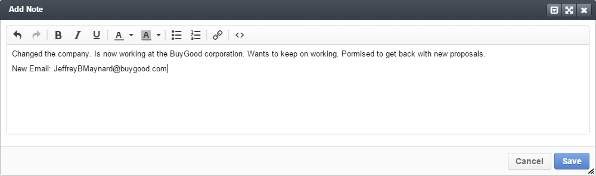
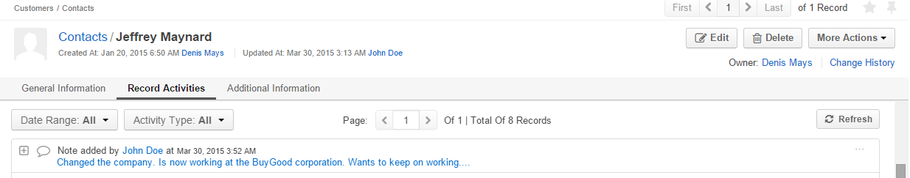

Notes¶
Add a Note¶
To save additional information about the record in OroCRM and OroCommerce, use the Add Note action.
Important
By default, the list of activities available for each entity is determined by what is most commonly used by businesses. However, if your company’s work process requires it, you can always turn the desirable activity on for almost any entity (except technical ones). If you need particular activities to be enabled for an entity, contact your administrator, or see steps 4 and 5 of the Create an Entity action description
- Click Add Note in the actions tab of the record.
- The Add Note page appears.
- This is a text box that you can fill with any text. Formatting tools are available at the top menu.
For example, we want to add a note to the contact Jeffrey Maynard to say that he has changed the company and is eager to keep working with us at his new company.

- Click the Save button and the note will be saved.
All the notes made for a record are displayed and can be reached from the Record Activities section on the View page:

To see the details, click on the note start or the + to the left from it.